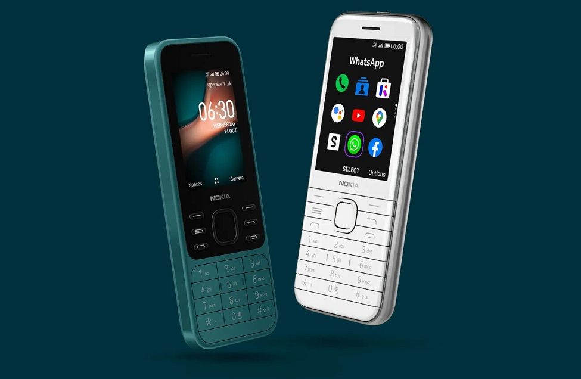

Nokia 6300 4G y Nokia 8000 4G: HMD Global revive otros dos clásicos de Nokia con KaiOS
bajó el capó

Fotografía de un Nokia 6300 4G y Nokia 8000 4G
HMD Global, la empresa detrás de la marca Nokia, lleva tiempo reviviendo teléfonos clásicos y
actualizándolos para los tiempos actuales.
Tenemos el Nokia 3310, el Nokia 8810 (a.k.a. el móvil de 'Matrix') y ahora llegan los Nokia 6300 4G y Nokia
8000 4G, dos móviles míticos de la firma finlandesa.
Ambos dispositivos siguen apostando por el diseño de antaño, aunque este se ha modernizado con nuevos
colores y acabados. En su interior encontramos el sistema
operativo KaiOS, que es compatible con diferentes aplicaciones (como WhatsApp), por lo que no se puede decir
que sean exactamente "móviles tontos". Sus precios son
de 49 y 79 euros, respectivamente.